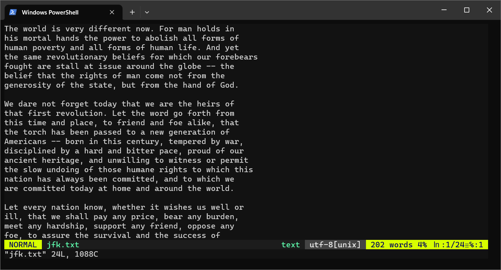
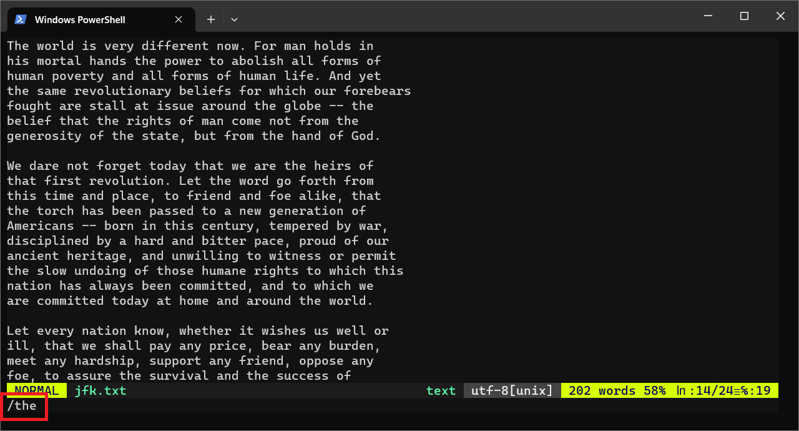

Quick vim Lessons
Learning Objectives
Students should
- have a basic familiarity with
vim.
Here is a quick walkthrough to get a taste of vim.
Lesson 1: Preparation
Step 1: Download
Download the following file for practice using vim in this session.
1 | |
The file named jfk.txt should be copied to your currentw orking directory. You can check that the file is created by typing the following
1 | |
Step 2: Open
Now let's start your first vim session. Open vim and load the downloaded jfk.txt using the following command
1 | |

Lesson 2: Navigation
Step 1: Moving
When you start, you will be in NORMAL mode. Do not go into the INSERT mode yet. Try the following exercise to get comfortable with the keys.
- Move the cursor around step-by-step backward (H), down (J), forward (K), and up (L).
- Move the cursor sentence-by-sentence forward ()) and backward (().
- Move the cursor paragraph-by-paragraph forward (}) and backward ({).
- Move the cursor page-by-page forward (Ctrl+F) and backward (Ctrl+B).
- Move the cursor to the beginning of the line with 0.
- Move the cursor to the end of the line with Shift+4 (i.e.,
$). - Move the cursor to the beginning of the file with G G.
- Move the cursor to the end of the file with Shift+G (i.e.,
G).
Step 2: Searching
Now try the following steps in NORMAL mode:
- Press /.
- Type in any word (or prefix of a word), we recommend the word
the. - Press Enter.
After step 2, you should see the following with your command highlighted in a red box.

This should move the cursor to the beginning of the word. You can use N and Shift+N to move to the next match and the previous match.
When you are comfortable moving around, you can type Shift+Z+Z to exit.
Congratulations, you have just completed your first session in vim!
Lesson 3: Manipulating Text
Now, we are going to open up the same file again and try to manipulate the text. We are going to stay in the NORMAL mode still.
1 | |
Step 1: Deletion
Deletion is closer to cut. The deleted characters are stored in a clipboard. Try the following:
- Press 0 D 3 W to move the cursor to the beginning of the line and delete three words.
- Press U to undo. This is another lifesaver that you should remember.
In vim, repeating the same command twice usually means applying it to the whole line. Pairing a command with Shift (or the capital letter version) usually means applying the action until the end of the line.
- Press D D to delete the current line.
- Press Shift+D to delete from the current cursor until the end of the line.
Step 2: Copy-Pasting
Pasting recovers what was stored in the clipboard. Try the following:
- Press P to paste back what you just deleted.
- Move the cursor to somewhere else.
- Press P to paste again.
We can also copy instead of cut (or delete and put into the clipboard).
- Press Y Y to copy (or yank) the current line.
- Move the cursor to somewhere else.
- Press P to paste the copied line.
Remember that all these commands can be composed using the movement-action-movement pattern.
- Press Shift+9 Y Shift+0 to
- move to the beginning of the sentence: Shift+9 (i.e., {)
- copy (i.e., yank): Y
- until the end of the sentence: Shift+0 (i.e., })
As you have seen in the D 2 W example, you can precede an action with a number to repeat an action multiple times.
- Press Y Y 9 P.
- You should be able to understand what just happened!
Step 3: Deleting a Character
The X command deletes the current character.
Try this exercise: At the end of the file jfk.txt, there are some typos:
1 | |
Change libertyi. liberty. to libtery. by positioning the cursor on the second i and deleting it. Then use Shift+D to delete the extra liberty. at the end of the sentence.
Step 4: Visual Mode
In addition to the INSERT and NORMAL modes, vim has a third mode, the VISUAL mode. You can enter the VISUAL mode by hitting V. Once in visual mode, you can move your cursor to select the text and perform some actions on it (e.g., D or X to delete, Y to yank).
Hitting Shift+V will allow you to select line-by-line.
The VISUAL mode allows us to pipe the selected text to another Unix command, and replace it with the result of that command.
Go ahead and try the following:
- Select a paragraph in
jfk.txt. - Press :.
You will see that
1 | |
appears in the last line of the terminal. At this point, you can type in actions that you want to perform on the selected text. For instance,
1 | |
will write it to a file named john.txt.
But, let's try the following:
1 | |
!fmt tells vim to invoke the shell and run fmt. fmt is another simple small Unix utility that takes in a text (from standard input) and spews out formatted text in the standard output. You will see that the width of the text has changed to the default of 65.
You can try something that we have seen before. Select the text again, and hit
1 | |
The selected text will be replaced with the output from wc.
Step 5: The : command
You have seen examples of : commands for writing to a file or piping selected text to an external command.
The : command also enables many actions that you can do in vim. Here are a few essential yet simple commands.
- To jump to a line, hit : followed by the line number.
- To open another file, hit : and then type in
e <filename> - To find help on a topic, hit : and then type in
help <keyword>
Other advanced features such as search-and-replace, changing preferences, splitting windows, and opening new tabs, are also accessible from the : command.
The : command prompt supports Ctrl+P and Ctrl+N for navigating back and forth your command history, just like bash. It also supports Tab for auto-completion.
Lesson 3: Insert mode!
Finally, we are going to try inserting some text. Remember, to use INSERT mode, we always start with the command I A O or S (may pair with Shift) followed by the text that
you want to insert, followed by Esc.
Step 1: Insert
Let's try I (insert).
- Place your cursor anywhere.
- Press I to go into
INSERTmode - Start typing.
- When you are done, press Esc.
You just added some text to the file.
Step 2: Append
Now let's try A (append).
- Place your cursor anywhere.
- Press A.
- Start typing.
- When you are done, press Esc.
A appends the text to the end of the current line.
Step 3: Open
Now let's try O (open).
- Place your cursor anywhere.
- Press O.
- Start typing.
- When you are done, press Esc.
O opens up a new line for your text.
Step 4: Substitute
Now let's try O (open).
- Place your cursor anywhere.
- Press S.
- Start typing.
- When you are done, press Esc.
S substitute the current character with your text.
Step 5: Shift
Now try it with Shift and see the difference in behavior.
Learning More
You can run vimtutor to learn more about vim.
You can also check out the tips that we have collected for CS1010 or watch the various tutorials online.
Here are some useful resources on vim:
- Learn vim Progressively.
- Vim: Precision Editing at the Speed of Thought: A talk by Drew Neil
- Vim Adventure: An adventure game for learning
vim - Vim Casts: Videos and articles for teaching
vim - Vim Video Tutorials by Derek Wyatt
- Vim Awesome: Directory of plugins.